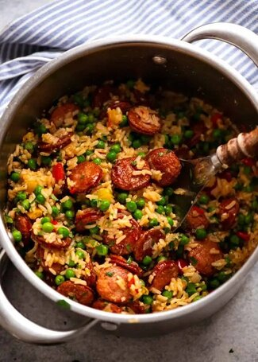

Smoked Sausage and Rice

Description
One pot smoked sausage and rice
This sausage and rice casserole recipe was conceived as a quick and low-effort dish. What makes this recipe tick
is the use of smoked sausages. An under-utilised yet economical ingredient sold at all supermarkets, smoked sausages
like kransky and kielbasa (Polish sausages) pack a ton of flavour thanks to their smoky taste and the generous seasoning
in the sausage itself.
Ingredients
- 3 tbsp exta virgin olive oil
- 5 garlic cloves
- 2 onions
- 1 yellow capsicum
- 400g/14oz kransky or other smoked sausages
- 3/4 tsp salt
- 1/2 tsp pepper
- 3/4 tsp smoked paprika
- 1 1/2 cup long grain white rice
- 2 1/2 cups chicken stock/broth
- 2 cups frozen peas
- 2 tbsp parsley
Steps
- Cook sausage:Heat 2 tbsp oil in a large heavy based pot over medium
high heat. Add sasages and cook until golden. Remove with a slotted spoon.
- Cook onion and garlic:Add remaining 1 tbsp oil. Add garlic and onion,
cook for 2 minutes. Add capsicum and cook for 2 minutes until onion is translucent.
- Add rice and liquid:Add rice, chicken stock, paprika, salt, pepper and
the sausage. Stir, bring to boil, then reduce heat to low so it's simmering very gently.
- Cover and cook:Cover with lid, cook 20 minutes.
- Add peas and rest:Remove pot from stove. Working quickly, remove lid, add peas,
then quickly put the lid back on. Rest 10 minutes – the residual heat with cook the peas.
- Fluff and serve:Add parsley. Use a fork to fluff the rice. Serve immediately!